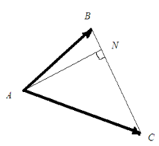
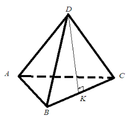

Тема заняття. Векторний добуток двох векторів та його властивості
Векторним добутком векторів \(\vec{a}\) і \(\vec{b}\) називається вектор \(\vec{c}\), який задовольняє умови:
- Вектор \(\vec{c}\) перпендикулярний до векторів \(\vec{a}\) і \(\vec{b}\).
- Напрям \(\vec{c}\) вектора вибирається так, щоб трійка векторів \(\vec{a}\), \(\vec{b}\), \(\vec{c}\) була правою (див. рис.1).
- \(|\vec{с}|=|\vec{a}|⋅|\vec{b}|⋅sin\varphi\), де \(\varphi\) - кут між векторами \(\vec{a}\) та \(\vec{b}\).
Рис.1
Векторний добуток векторів \(\vec{a}\) та \(\vec{b}\) позначається символами \(\vec{a}\times\vec{b}\).
Геометричний зміст векторного добутку. Площа паралелограма, побудованого на векторах \(\vec{a}\) та \(\vec{b}\), дорівнює модулю векторного добутку цих векторів, які віднесені до спільного початку, тобто \(S=\left|\vec{a}\times\vec{b}\right|\).
Справді, площа паралелограма дорівнює добуткові його суміжних сторін на синус кута між ними, тобто
\(S=\left|\vec{a}\right|\cdot\left|\vec{b}\right|\cdot s i n{\varphi}=\left|\vec{a}\times\vec{b}\right|\).
Властивості векторного добутку
- Векторний добуток дорівнює нульовому вектору тоді і тільки тоді, коли вектори колінеарні або один з них нульовий.
- Векторний добуток залежить від послідовності співмножників, а саме:
\(\vec{a}\times\vec{b}=-\left(\vec{b}\times\vec{a}\right)\)
- Асоціативність відносно скалярного множника (числа):
\(\left(\lambda\vec{a}\right)\times\vec{b}=\vec{a}\times\left(\lambda\vec{b}\right)=\lambda\left(\vec{a}\times\vec{b}\right)\).
- Розподільна властивість відносно додавання:
\(\left(\vec{a}+\vec{b}\right)\timesс=\vec{a}\times\vec{c}+\vec{b}\times\vec{c}\).
- Векторний квадрат завжди дорівнює нулю:
\(\vec{a}\times\vec{а}=0\)
Координатна форма векторного добутку
Нехай \(\vec{a}=\left(a_x;a_y;a_z\right)\), \(\vec{b}=\left(b_x;b_y;b_z\right)\). Тоді векторний добуток зручно знаходити за формулою
\(\vec{a}\times\vec{b}=\left|\begin{matrix}\vec{i}&\vec{j}&\vec{k}\\a_x&a_y&a_z\\b_x&b_y&b_z\\\end{matrix}\right|\).
Приклад 1 Дано точки A(2;-1;2), B(1;2;-1), C(3;2;1). Знайти векторний добуток \(\vec{АВ}\times\vec{ВС}\).
Розв’язок.
\(\vec{АВ}\left(1-2;2-\left(-1\right);-1-2\right)\), \(\vec{АВ}\left(-1;3;-3\right)\).
\(\vec{BC}\left(3-1;2-2;1-\left(-1\right)\right)\), \(\vec{BC}\left(2;0;2\right)\).
\(\vec{AB}\times\vec{BC}=\left|\begin{matrix}\vec{i}&\vec{j}&\vec{k}\\-1&3&-3\\2&0&2\\\end{matrix}\right|=\vec{i}⋅\left(6-0\right)-\vec{j}⋅\left(-2+6\right)+\vec{k}⋅\left(0-6\right)=6\vec{i}-4\vec{j}-6\vec{k}\).
Тобто, отримали вектор \(\vec{c}\left(6;-4;-6\right)\).
Приклад 2 Знайти синус кута \(\varphi\), який утворюють вектори \(\vec{a}\left(2;-2;1\right)\), \(\vec{b}\left(2;3;6\right)\).
Розв’язок.
\(\left|\vec{a}\right|=\sqrt{4+4+1}=3\), \(\left|\vec{b}\right|=\sqrt{4+9+36}=7\)
\(\vec{c}=\vec{a}\times\vec{b}=\left|\begin{matrix}\vec{i}&\vec{j}&\vec{k}\\2&-2&1\\2&3&6\\\end{matrix}\right|=\vec{i}⋅\left(-12-3\right)-\vec{j}⋅\left(12+2\right)+\vec{k}⋅\left(6-4\right)=-15\vec{i}-10\vec{j}-10\vec{k}\),
Тобто, \(\vec{c}\left(-15;-10;10\right)\).
\(|\vec{с}|=|\vec{a}×\vec{b}|=\sqrt{225+100+100}=5\sqrt{17}\)
\(sin{\varphi}=\frac{\left|\vec{a}\times\vec{b}\right|}{\left|\vec{a}\right|\cdot\left|\vec{b}\right|}\), \(sin{\varphi}=\frac{5\sqrt{17}}{21}\)
Приклад 3 Обчислити площу трикутника з вершинами в точках A(1;-1;2), B(5;-6;2), C(1;3;-1) та довжину висоти, проведену з вершини А.

Розв’язок.
Знайдемо вектори \(\vec{АВ}\) і \(\vec{AC}\), які збігаються зі сторонами трикутника АВС. Маємо
\(\vec{АВ}=\left(4;-5;0\right)\), \(\vec{АC}=\left(0;4;-3\right)\).
\(\vec{AB}\times\vec{AC}=\left|\begin{matrix}\vec{i}&\vec{j}&\vec{k}\\4&-5&0\\0&4&-3\\\end{matrix}\right|=\vec{i}⋅\left(15-0\right)-\vec{j}⋅\left(-12-0\right)+\vec{k}⋅\left(16-0\right)=15\vec{i}+12\vec{j}+16\vec{k}\)
Площа трикутника АВС дорівнює половині площі паралелограма, побудованого на векторах \(\vec{AB}\) і \(\vec{AC}\), тобто
\(S_{ABC}=\frac{1}{2}|\vec{АВ}×\vec{АС}=\frac{1}{2}\sqrt{15^2+12^2+16^2}=\frac{1}{2}\sqrt{225+144+256}=\frac{1}{2}\sqrt{625}=12,5\)
Знайдемо довжину висоти \(AN\).
\(S_{ABC}=\frac{1}{2}ВС⋅AN\), тоді \(AN=\frac{2S_{ABC}}{BC}\).
\(ВС=\sqrt{\left(х_С-х_В\right)^2+\left(y_С-y_В\right)^2+\left(z_С-z_В\right)^2}\).
\(ВС=\sqrt{\left(1-5\right)^2+\left(3+6\right)^2+\left(-1-2\right)^2}=\sqrt{-4^2+9^2+-3^2}=\sqrt{16+81+9}=\sqrt{106}≈10,3AN=\frac{2⋅12,5}{10,3}≈2,4\)
Приклад 4 Задані координати вершин піраміди A(2;-3;5), B(0;2;1), C(-2;-2;3), D(3;2;4).
Знайти:
- площу граней АВС, ВСD;
- висоту грані BCD, яка проведена з вершини D;
Розв`язок.
- Для знаходження площі грані виберемо два вектори, що виходять з однієї вершини, і знайдемо їх векторний добуток.
Грань АВС: \(\vec{АВ}=\left(-2;5;-4\right)\), \(\vec{АC}=\left(-4;1;-2\right)\)
\(\vec{AB}\times\vec{AC}=\left|\begin{matrix}\vec{i}&\vec{j}&\vec{k}\\-2&5&-4\\-4&1&-2\\\end{matrix}\right|=\vec{i}⋅\left(-10+4\right)-\vec{j}⋅\left(4-16\right)+\vec{k}⋅\left(-2-20\right)=-6\vec{i}+12\vec{j}+18\vec{k}\)
\(S_{ABC}=\frac{1}{2}|\vec{АВ}×\vec{АС}|=\frac{1}{2}\sqrt{36+144+324}=\frac{1}{2}\sqrt{504}≈11,22\)
Грань ВСD: \(\vec{ВС}=\left(-2;-4;2\right)\) , \(\vec{ВD}=\left(3;0;3\right)\)
\(\vec{BC}\times\vec{BD}=\left|\begin{matrix}\vec{i}&\vec{j}&\vec{k}\\-2&-4&2\\3&0&3\\\end{matrix}\right|=\vec{i}⋅\left(-12-0\right)-\vec{j}⋅\left(-6-6\right)+\vec{k}⋅\left(-0-12\right)=-12\vec{i}+12\vec{j}+12\vec{k}\)
\(S_{BCD}=\frac{1}{2}|\vec{ВС}×\vec{BD}|=\frac{1}{2}\sqrt{432}≈10,39\)
2) \(DK=\frac{2S_{BCD}}{BС}\)
\(ВC=\sqrt{-2^2+-4^2+2^2}=\sqrt{4+16+4}=\sqrt{24}≈4,9\)
\(DK=\frac{2\cdot10,4}{4,9}\approx4,2\)